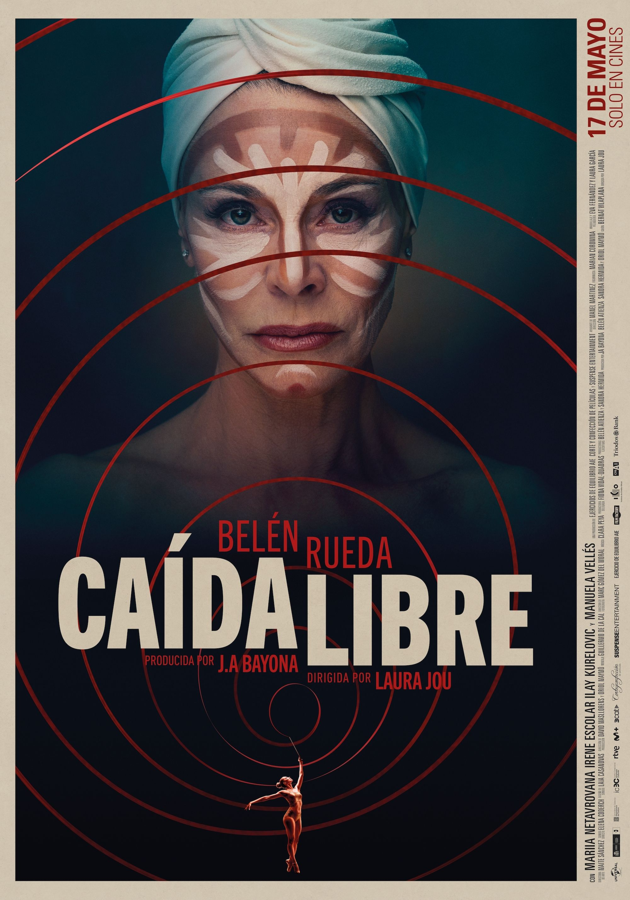
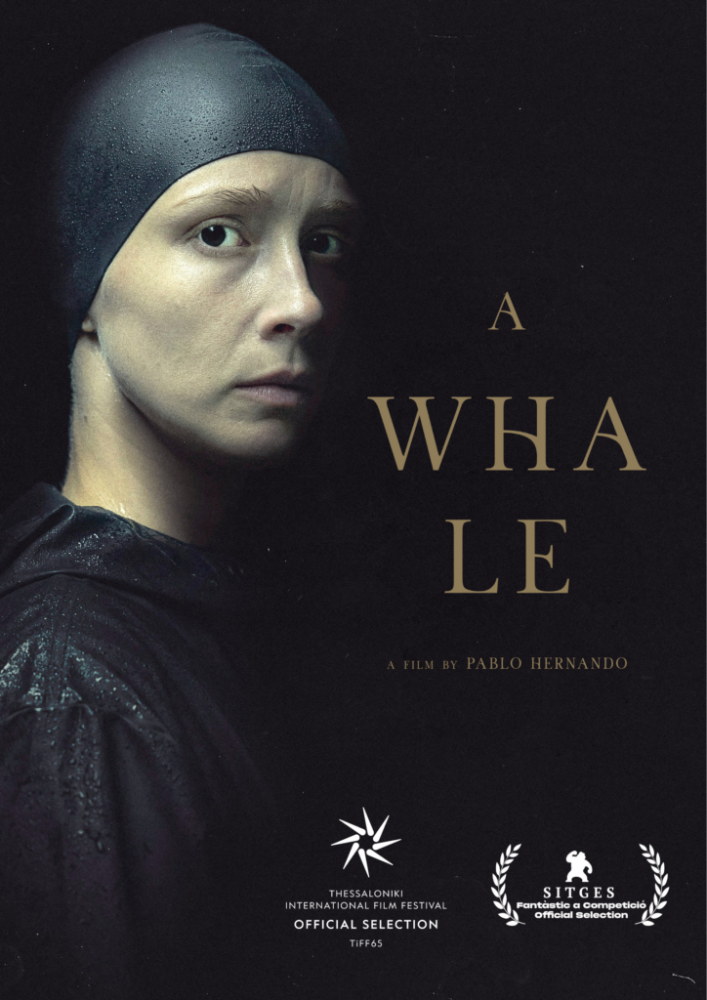
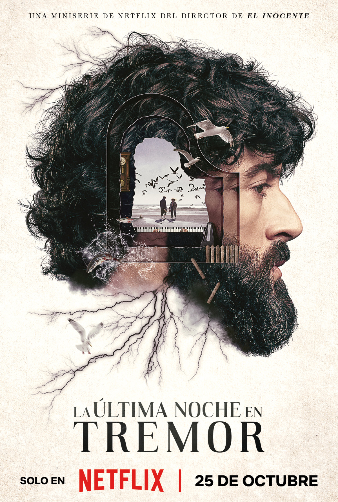
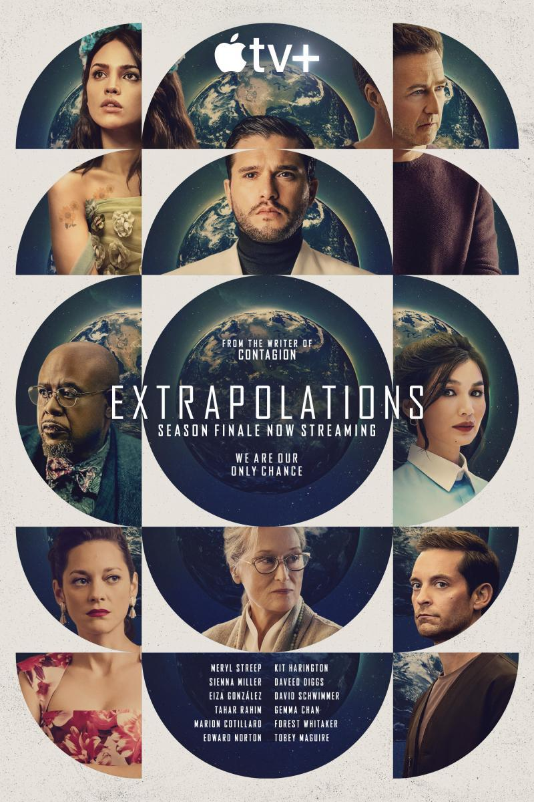
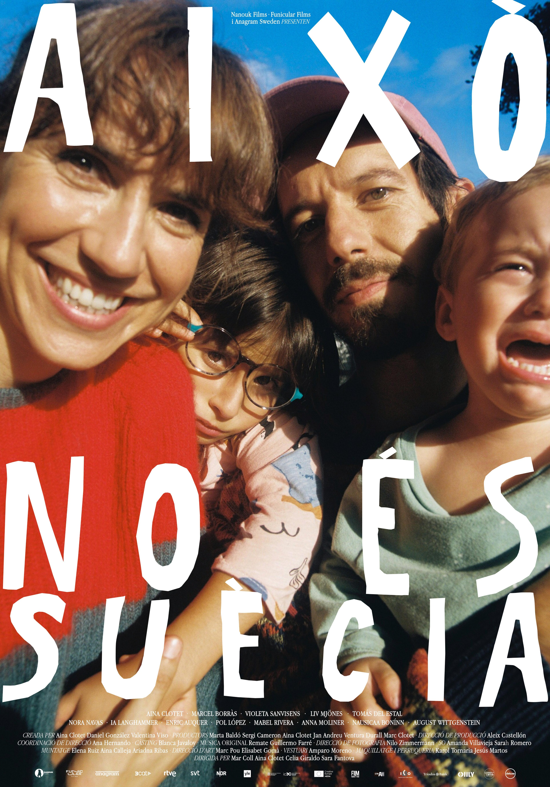

Featured Work

Caída Libre - Dir. Laura Jou | Prod. J.A. Bayona

A Whale - Dir. Pablo Hernando

Last Night in Tremor - Mini-series | Netflix

Society of the Snow - Dir. J.A. Bayona | Netflix

Extrapolations - Apple TV+

Això no és Suècia - Series | Nanouk Films